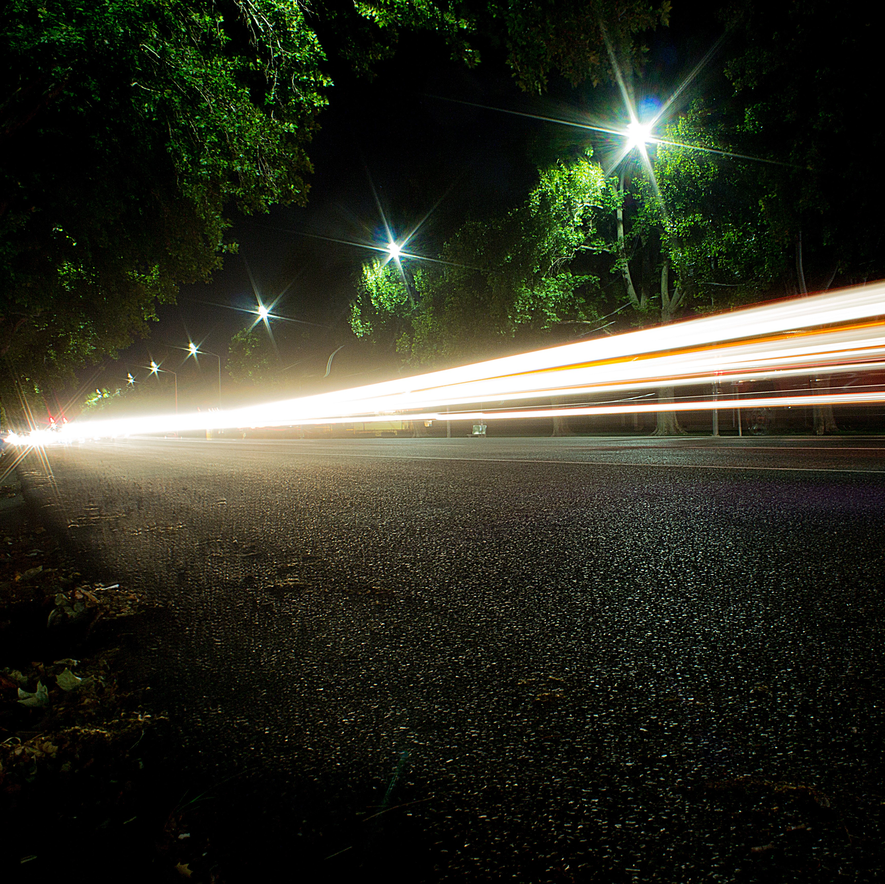

"Photography is an art of observation. It has little to do with the things you see and everything to do with the way you see them"
-Elliot Erwitt


-Elliot Erwitt
Sometimes mundane things around us can be absolutely spectacular. Seeing the world through a camera lense can block out some of the crowded noise and let us enjoy the little things. And the little things can become the biggest things. My photographs are perfect for reminding us to take a moment and appreciate life, whatever form it may come in.